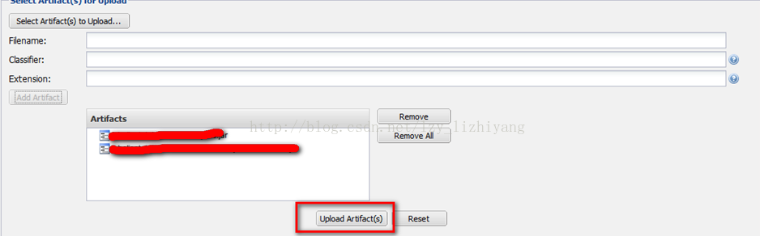

如何上传jar包至Maven私服
如何上传jar包至Maven私服
1、通过浏览器进入，点击右上角的。
2、在弹出的登录窗口中输入用户名和密码。
3、登录成功之后，点击左侧列表中的Views/Respsitories-->Respsitories。
4、在打开的标签页中，选择3rd party，我们自己的jar包都要上传到3rdparty中。在下方的窗片 中，可以浏览到所有的第三方的jar包。
中，可以浏览到所有的第三方的jar包。
5、点击下方窗片的，准备上传我们自己的包。
GAV Definition 选择：GAVParameters。
依次填写Group、Artifact、Version，分别对应pom.xml文件中的groupId、artifactId、version。
Packaging选择jar
填写完成之后，点击选择需要上传的jar，下方的Filename、Extension会自动填充。
6、文件选择完毕后，点击，将选择的jar包添加至Artifacts中。
7、再次点击 ，将jar包的源码包同样上传上来。
，将jar包的源码包同样上传上来。
8、将jar包和source包都上传完毕后，点击，将两个包上传至仓库中。

9、上传成功之后，可以在 中，查看到刚刚上传的jar包。
中，查看到刚刚上传的jar包。